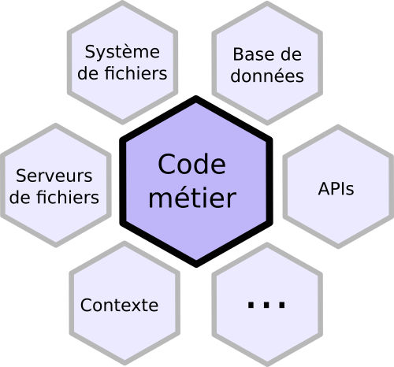
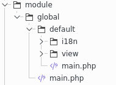

Software Craftmanship
Introduction
Le mouvement "software craftmanship" vise à revaloriser notre profession en assimilant notre activité à celle de l'artisanat.
En tant qu'artisan du logiciel, il est aussi important qu'une application fonctionne correctement qu'elle soit bien conçu et facilement maintenable.
Dans cette optique, la nouvelle version du Builder Mkframework accueille une nouvelle famille de template d'application et de générateurs adoptant cette philosophie.
Présentation
Ces templates applicatif sont différents sur ces points:
- utilisation d'une architecture hexagonale
- multi-lingue
- accompagné de leurs tests unitaire
- heritage/multi-niveaux (module enfant heritant de module parent)
Architecture hexagonale

Pour cela, au lieu de mettre le code directement dans le module, on créé une classe business qui contiendra notre code métier
Par exemple pour un CRUD nous avons une classe business prenant dans son constructeur ces fameux liens
<?php
class business_crudUsers extends business_abstract {
protected $_oModel;
protected $_oAuth;
protected $_oI18n;
protected $_oValid;
protected $_tColumn = array('login','password','groups_id',);
public function __construct(interface_model $oModel_, interface_i18n $oI18n_, interface_valid $oValid_) {
$this->_oModel = $oModel_;
$this->_oI18n=$oI18n_;
$this->_oValid=$oValid_;
}
}
Puis une méthode pour chaque action, par exemple pour editer un élément:
public function updateItem($id_, $tParam_) {
$oValid = $this->getCheck($tParam_);
if (!$oValid->isValid()) {
return $this->sendReturn(false, array('tError' => $oValid->getListError()));
}
$oUsers_=$this->_oModel->findByID($id_);
foreach ($this->_tColumn as $sColummn) {
$oUsers_->$sColummn = $tParam_[$sColummn];
}
$this->_oModel->update($oUsers_);
return true;
}
Et dans le module pour l'appeler:
private function processSave() {
//si ce n'est pas une requete POST on ne soumet pas
if (!_root::getRequest()->isPost()) {
return null;
}
$oPluginXsrf = new plugin_xsrf();
//on verifie que le token est valide
if (!$oPluginXsrf->checkToken(_root::getParam('token'))) {
return array('token' => $oPluginXsrf->getMessage());
}
$tParams = _root::getRequest()->getParams();
$oBusiness = new business_crudUsers(model_Users::getInstance(), _root::getI18n(), new plugin_sc_valid() );
$iId = _root::getParam('id', null);
if ($iId == null) {
if (false === $oBusiness->insertItem(new row_Users, $tParams)) {
return $oBusiness->getReturn()->getData('tError');
}
} else {
if (false === $oBusiness->updateItem(_root::getParam('id'), $tParams)) {
return $oBusiness->getReturn()->getData('tError');
}
}
//une fois enregistre on redirige (vers la page liste)
_root::redirect('global_Users::list');
}
Multi lingue
L'application inclut des fichiers de langue à sa racine
- data/i18n/fr.php
Mais également dans chacun des modules générés en héritant
Par exemple

Tests unitaires
Chaque génération incluant à la fois une classe business (architecture hexagonale) ainsi que les tests unitaires associés
Ceci facilite les tests unitaires, ici par exemple (généré par le builder)
public function test_insertItemShouldReturnErrorsMissing() {
$oMockModel = $this->getMock('interface_model');
$oBusiness = new business_crudUsers($oMockModel,new plugin_i18nFake() );
$tParam = array();
$tColumn = array('login','password','groups_id');
foreach ($tColumn as $sColumn) {
$tParam[$sColumn] = null;
}
$bReturn = $oBusiness->insertItem(new stdclass(), $tParam);
$this->assertEquals(false, $bReturn);
$tError = array();
foreach ($tColumn as $sColumn) {
$tError[$sColumn] = array('{errorIsEmpty}');
}
$this->assertEquals($tError, $oBusiness->getReturn()->getData('tError'));
}
Note: comme tout ce que génère le builder, ce n'est pas gravé dans le marbre c'est une base de travail qu'il vous tient d'enrichir/adapater à vos besoins
Héritage / multi-niveaux
Vous pouvez ici gérer l'héritage de modules, par exemple avoir une module "privé" dans lequel on
- activerai l'authentification,
- créerait un layout
- chargerait le / le(s) menu(s)
Et ainsi tous les modules héritant de ce module parent, profiterait de ceci : plus besoin de dupliquer votre code before()
Vous avez également un héritage de la gestion de droits: vous avez à la racine un fichier de langue, puis dans chaque module des fichiers de langues s'aditionnant à celui-ci.